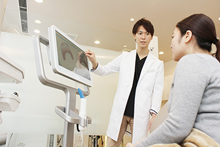

- ホーム
- 矯正治療｜矯正治療とは
Ortho Concept全身の健康面にも精神面にもよい影響が期待できます
矯正治療を受ける方のほとんどが、お口まわりの見た目の改善のためにご来院になります。歯並びや噛み合わせが整うと、自然な口元の美しさを得られますが、メリットはそれだけではありません。精神面を含めた心身の健康にもよい影響を与えるのです。
歯並びが気になる方は、渋谷駅すぐの歯医者「渋谷ルーブル歯科・矯正歯科」にお気軽にご相談ください。
当院が矯正治療で心がけていること
少し前までは、矯正歯科治療は子どもが受けるイメージが強い治療でした。しかし近年は、歯の健康や口元の美しさへの関心が高まり、女性だけでなく男性も治療を受ける方が増えています。そのため多様化するさまざまなニーズにお応えし、どなたでも気軽に矯正治療を受けていただけるように、一般的なワイヤー矯正だけでなく、目立ちにくい素材を使ったり、舌側に装置をつけるリンガルブラケット矯正システムをご提供したり、マウスピースを使用した矯正システムに対応したりしています。
ほかにも顎の骨に作用させて治療効果を早める「コルチコトミー」や矯正用アンカースクリューを使用した矯正システムもご提供します。幅広い選択肢がありますので、患者様のライフスタイルに合った治療法をお選びいただけるはずです。
また、できるだけ患者様のご負担を減らし、治療費を抑えることができるように、グループ医院で歯科材料や矯正装置を共同で大量購入することで一つひとつの装置の単価を抑え、治療費がリーズナブルになるように心がけています。
当院の矯正治療へのこだわり

矯正治療を受けたいとご来院のほとんどの方は、口元に何らかのコンプレックスを感じていらっしゃいます。そこで、当院では不安を払拭し安心してリラックスしていただけるように、スタッフ全員が患者様を笑顔でお迎えし、ホスピタリティ精神を発揮して、居心地のよい環境をご提供しています。豊富な知識と技術とともに歯科診療を進めてまいります。
患者様の健やかな人生を、心を込めてサポートさせていただきます。さらにメンテナンスでの長いおつきあいを通して、日常生活はもちろん就職活動や結婚式など人生の節目のときに、思いっきりの笑顔になっていただきたいと願っています。
そもそも、なぜ矯正治療が必要なのでしょうか？
歯並びが悪いと口元が目立ってしまい、他人の視線が気になって、人前で話したり、笑顔になったり、食事をしたりがイヤになってしまうことがあります。しかし噛み合わせが悪いのは見た目のコンプレックスを生むだけではありません。身体にも影響を与えるのです。
たとえば、歯と歯が重なっていると汚れがたまりやすく、お口の自浄作用がはたらきにくくなってしまいます。ブラッシングでも歯ブラシが届きにくいので虫歯や歯周病にかかりやすくなってしまうのです。また歯並びのせいで舌の位置が定まらないと発音が不明瞭になってしまいます。
ほかに全身への影響としては、噛み合わせが悪く食べ物を細かく噛み砕く咀嚼がうまくいかないと、消化不良を起こしやすく胃腸に過度の負担をかけてしまいます。また左右のどちらか片側ばかりで噛むクセがあると、顔貌がゆがんだり、肩こりや首こりを引き起こしたり、顎関節症が発症する原因にもなることもあります。
悪い歯並びについて
※表は左右にスクロールして確認することができます。
| 上顎前突（じょうがくぜんとつ） | 下顎前突（かがくぜんとつ） | 開咬（かいこう） |
|---|---|---|
|
「出っ歯」とも呼ばれる歯並びです。上の歯が突出して見えます。上下顎のバランスが悪い場合と、上の前歯が大きかったり、前方に傾いたりした場合があります。 |
「受け口」とも呼ばれ、下の歯列が上の歯列よりも前に出ている状態です。上下の顎のバランスが悪い、上下の歯の傾斜が悪いなどによって引き起こされます。 |
奥歯を噛み合わせたときに、前歯が噛み合わず、すき間ができてしまう状態です。食べ物を噛み切りにくく、発音が不明瞭になりがちです。 |
| 交叉咬合（こうさこうごう） | 叢生（そうせい） | 正中離開（せいちゅうりかい） |
|
上下の前歯の中心がずれ、下の歯列が一部交叉して外側にずれている状態です。顔貌がゆがみやすく、咀嚼もあまりうまくいかないことがあります。 |
歯がでこぼこに生えている状態です。「八重歯」や「乱ぐい歯」も叢生の一種です。汚れがたまりやすいので虫歯や歯周病にかかりやすい噛み合わせです。 |
前歯が空いている状態で空隙歯列（くうげきしれつ）ともいいます。「すきっ歯」とも呼ばれ、とても目立ちます。食べ物が歯と歯の間に挟まりやすいのも特徴です。 |

矯正治療によって得られる5つのメリット
MERIT-1 コンプレックスの解消
見た目が改善され、口元のコンプレックスも解消されます。人前に出るのが億劫でなくなり、笑顔に自信が持てるうえ、前向きな気持ちを持てるでしょう。
MERIT-2 虫歯や歯周病の予防
飲食の際に汚れがたまりにくいうえ、ブラッシングで汚れが落ちやすいので虫歯や歯周病などのお口のトラブル予防につながります。
MERIT-3 発音がしやすい
すきっ歯が改善されると息がもれないのできれいな発音ができます。また舌の位置が定まりやすいので、はっきりと発音できるようになるのです。
MERIT-4 顔のゆがみが改善
歯並びが乱れていると上下の前歯の中心線が合わないことがあり、顔貌がゆがんでしまうことがありますが、矯正治療で整えるとバランスが整います。
MERIT-5 肩こりや首こりが改善
噛み合わせのバランスが整うと全身のバランスも整うので、噛み合わせのバランスの悪さが引き起こす肩こりや偏頭痛などの不定愁訴が改善します。
矯正治療について